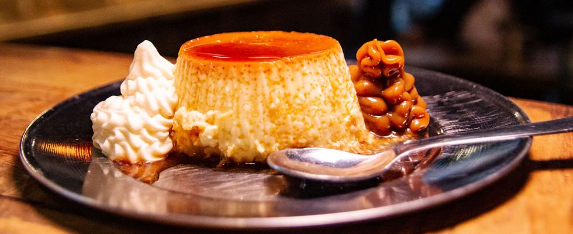
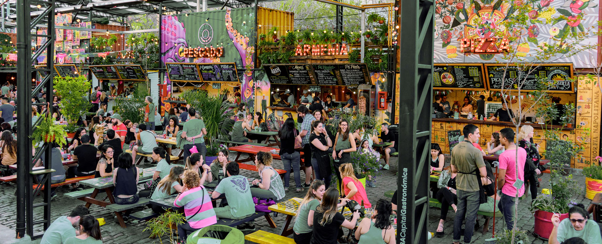

Dónde comer
En este buscador vas a poder filtrar por nombre, tipo de establecimiento (restaurante, bar, pizzería, etc.) y por barrio.
Ver Más

En este buscador vas a poder filtrar por nombre, tipo de establecimiento (restaurante, bar, pizzería, etc.) y por barrio.
Ver MásEn Buenos Aires, vas a encontrar platos típicos y comidas de todo el mundo.
Ver Más
Conocé los patios y mercados en donde podés disfrutar de la mejor gastronomía de la ciudad.
Ver MásVideo promocional que exhibe los principales atractivos arquitectónicos, parques públicos y la vida nocturna de la Ciudad de Buenos Aires.